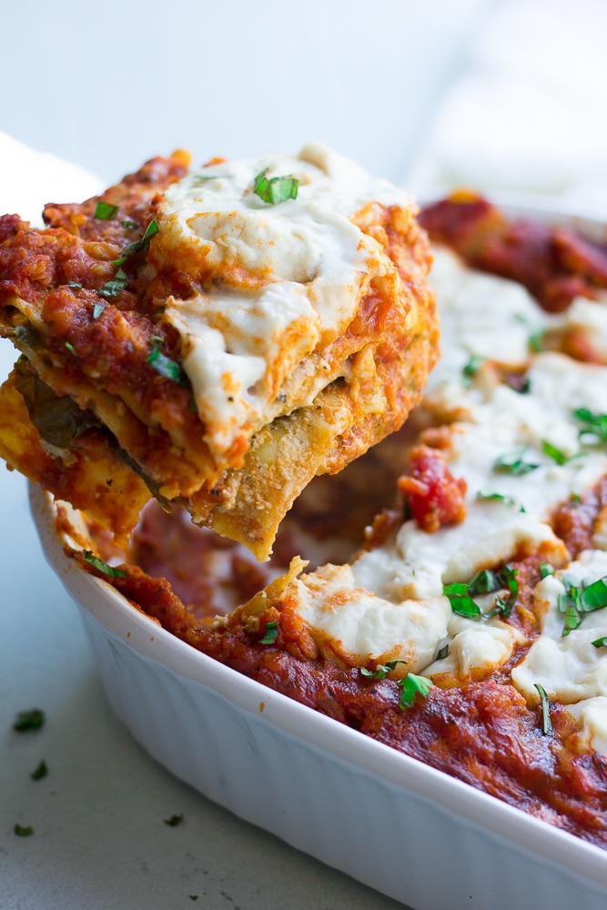

Vegan Lasagna

Description
This is hands down the BEST Vegan Lasagna. With a protein packed red lentil marinara sauce, tofu-cashew ricotta and lots of fresh spinach, this lasagna will satisfy everyone, vegan or not!
Ingredients
- 1 cup dried red lentils
- (2) 25-ounce jars marinara sauce
- 1 cup raw cashews
- 16 ounce firm tofu
- 1/2 cup nutritional yeast
- 3 Tablespoons fresh lemon juice, from about 2 lemons
- 1 teaspoon salt
- 1 teaspoon dried basil
- 1 teaspoon oregano
- 1/2 teaspoon garlic powder
- 2-3 cups baby spinach
- 1 box lasagna noodles
Instructions
- First, cook your red lentils. Add 1 cup dried red lentils and 3 cups of water to a medium pot. Bring to a boil, and then simmer for about 20 minutes. Drain the lentils in a fine strainer, and then add to a large bowl. Add both jars of marinara to the bowl with the lentils and mix to combine. Set aside.
- Preheat the oven to 350 degrees.
- Make the Cashew-Tofu Ricotta: Add the cashews to a food processor and process until fine and crumbly. Then add the tofu in chunks, nutritional yeast, lemon juice, salt, basil, oregano and garlic powder to the food processor. Pulse until well combined and pretty smooth.
- Assembling the lasagna: Add about 1 cup of marinara sauce (with the cooked lentils) to the bottom of a large 9 x 13 inch casserole dish or lasagna pan. Spread it around evenly. Next add 4-5 lasagna noodles (uncooked). Spread half of the Cashew-Tofu Ricotta on top of the noodles. Top with half of the spinach. Add about 1 cup of the marinara sauce over the spinach, then place 4-5 lasagna noodles on top. Spread the rest of the Ricotta over the noodles, then the rest of the spinach. Place 4-5 more noodles on top of the spinach, and then pour the rest of the sauce over the top, evenly.
- Cover tightly with foil. Bake for 1 hour. Let cool at least 15 minutes before cutting and serving.